OMR Steps
Original Image

Thresholding

Brace Removal
We get the bounding boxes of the image and check the first bounding box with a low aspect ratio and a very high height compared to the image height, and then remove it
Group Extraction
A horizontal projection of the whole image is calculated and then thresholded and then we extract minimas between those peaks and cut the image to groups on them
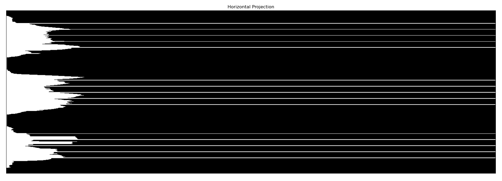

Handling each group
We take each group separately and handle it:
Augmentation Dots Detection
We can retrieve the augmentation dots by looking for bounding boxes with ~1 aspect ratio and small area, and then we can extract them from the image and remove them at this point in the pipeline

Clef removal
We remove the clef by taking the first peak in the group with a reasonable aspect ratio and then remove everything from the start of the image to that point
Removing Staff Lines
We can detect the staff lines by retrieving the horizontal projection and then getting the peaks, and subtracting them from the original image to get rid of the staff lines
- To avoid cutting notes, we can check if a point belongs to a note by inspecting its neighbourhood and if it does, we do not cut it from the image.
- We can retrieve the dimensions of the staff lines now as we will need it below
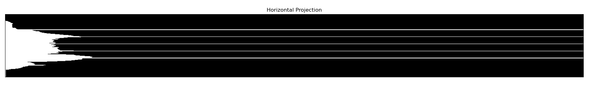
Sanitizing The Image
Right after removing the staff lines, we can get the original image without any lines and also we can apply vertical closing to also prevent any unhandled cuts in the notes, after that we can retrieve the bounding boxes from the closed image.
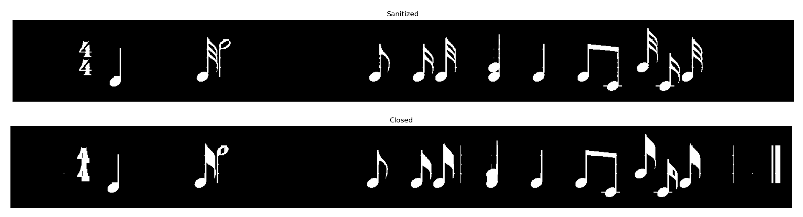
Handling Beamed Notes
We can segment according to the bounding boxes generated above, but we will have a problem that we need to detect which notes are beamed so that we can divide them into separate notes to prepare them for classification, so we can detect the note heads by doing a closing morphological step with an elliptical structring element with specific dimensions calculated from the staff dimensions.
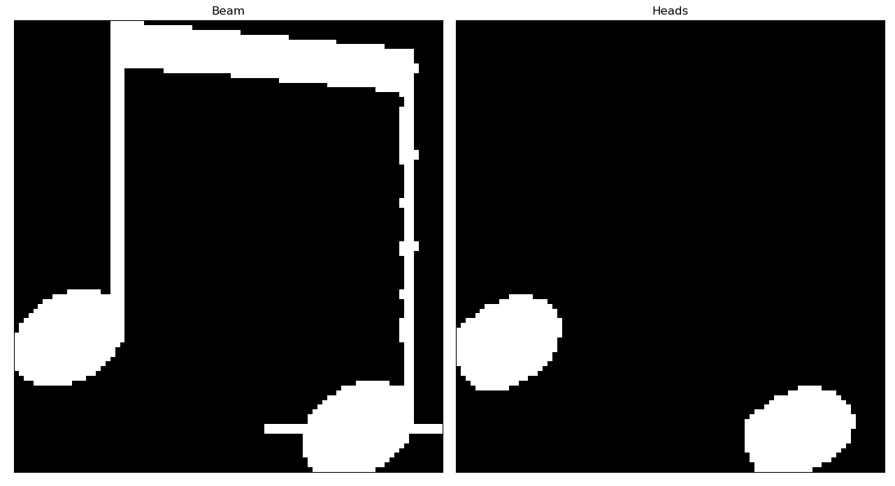
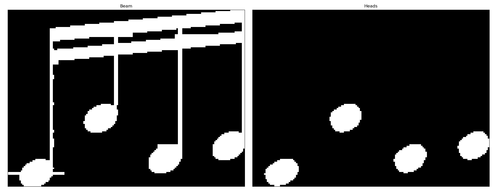
Final Segmentation Result
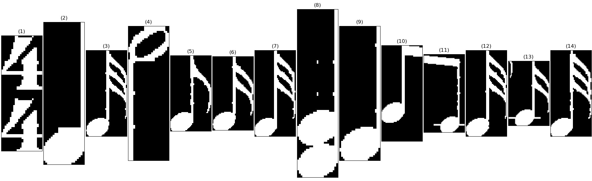
Our boxes are now ready for segmentation classification
Classification
As the image can contain various components like:
- Meters
- Augmentation Dots
- Various Accidentals
- Various Flagged Notes
- Various Beamed Notes
- Various Hollow Notes
- Chords
We need to construct a complex classifiers heirarchy to be able to handle all symbols.
Classifier Heirarchy
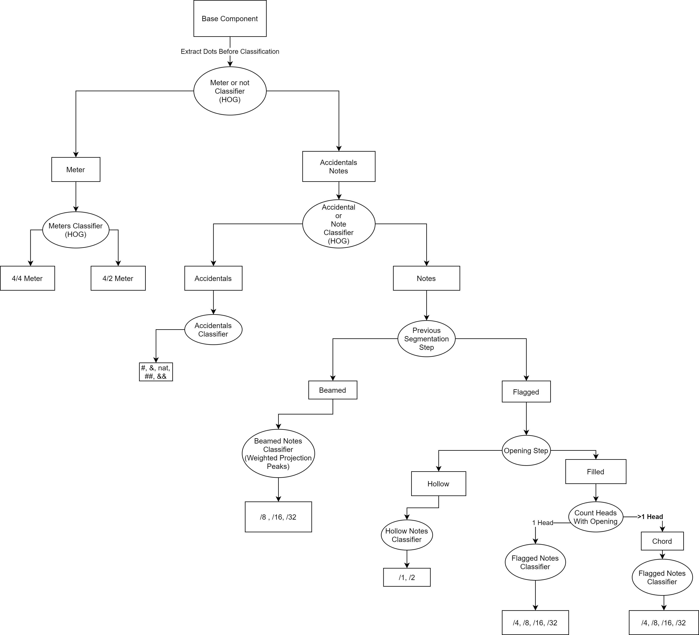
Identifying the note tone
After classifying which symbols are which, and knowing their timings, we also need to identify their tones.
This can be acheived by retrieving the staff lines from the image and also retrieving the note head by closing, and then checking the note head position with respect to the staff lines
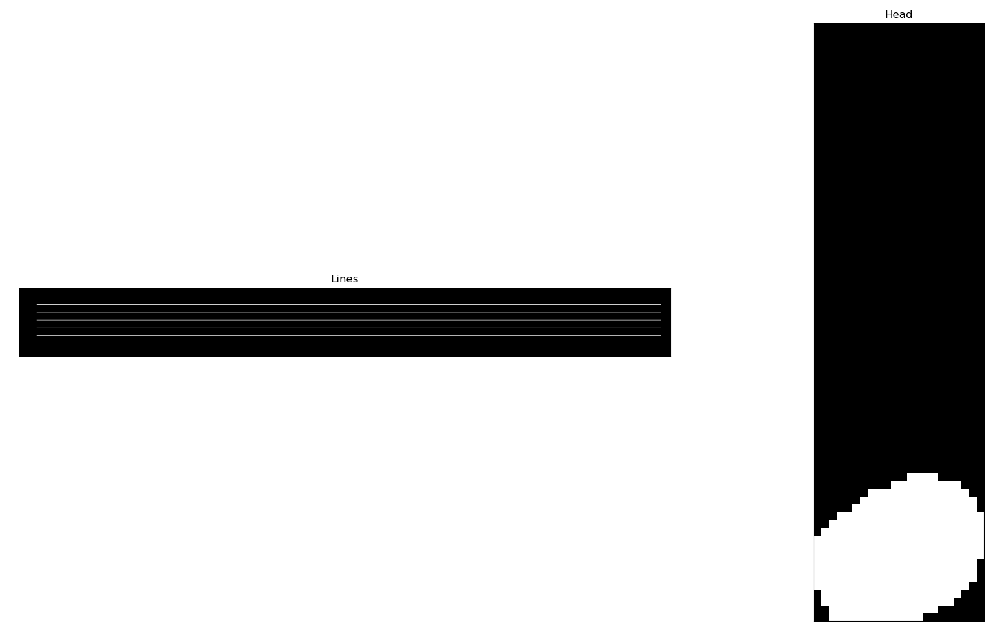
Tying Everything Together
After separating all symbols to separate components, we can now sort all components based on their X coordinates and tying all accidentals/dots to their closest note and we can then generate the final guido format now.
{
[\meter<"4/4"> d1/4 e1/32 e2/2 e1/8 e1/16 e1/32 {e1/4,g1/4} e1/4 d1/8 c1/8 g1/32 c1/16 e1/32],
[\meter<"4/4"> {b1/4,e1/4,g1/4} a1/8 d1/8 c1/16 g1/16 d1/16 e1/16 c2/16 g2/16 d2/16 e2/16 {b1/4,f1/4,g1/4} c1/4 a1/4. a1/8 a1/32..],
[\meter<"4/4"> e1/16 e1/16 e1/16 e1/16 e1/4 e#1/4 g1/4 g&&1/4 g1/4 e#2/4]
}
Preprocessing
We need a way to identify if the input image is a scanned image or a camera captured one so we can decide which steps are to be taken on the image to make it better.
Identification
We can identify if a note is scanned or camera-captured by observing the Hough line peaks of the image. If the image has angles far from 90 then it is a camera-captured one.
Deskewing
The deskewing steps are as follows:
- Threshold the image with Otsu
- Apply gaussian blur
- Dilate the image to get a big fat box of the staff
- Apply Canny to find edges
- Find the contours of the image
- Find the simplfied convex hull of all contours
- Extract the biggest convex hull
- Apply minAreaRect to fit a rectangle on the staff
- Apply perspective transform with the four corners of the rectangle obtained
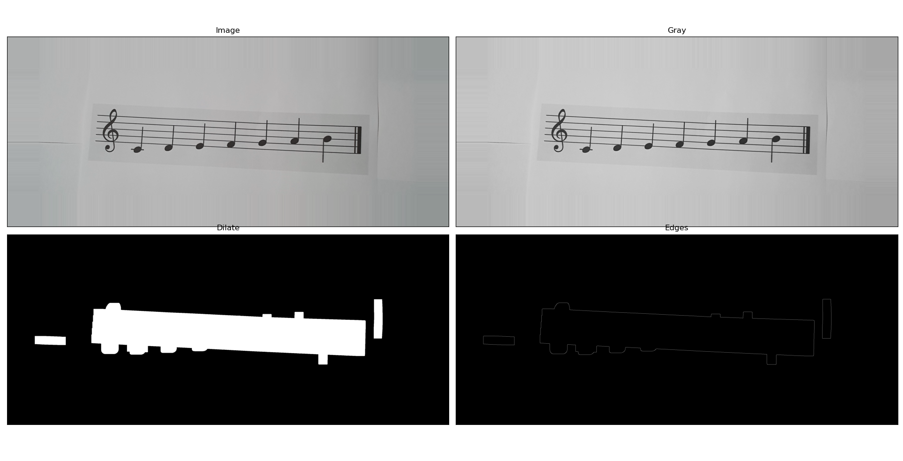
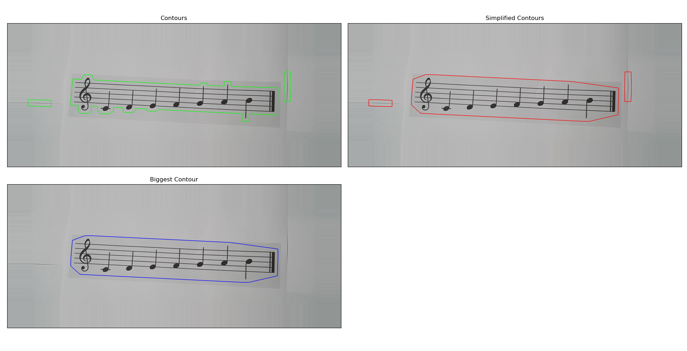

Thresholding and Denoising
All images need to be thresholded to make it look like a real scanned image, for this we use Otsu thresholding method
We can also apply a denoising step to enhance the image even more
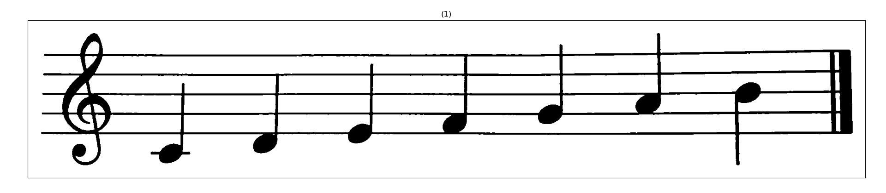
Camera Captured Pipeline
Since camera captured images are not completely perfect, we have decided to make a separate pipeline for them, similar to the original one but with some modifications
Removing the staff lines
Since the staff lines are not completely horizontal and have some skewing on them along the image, we decided to localize the staff removal on the image, by cutting the image into smaller pieces in width and removing the staff lines on each one of them.
- Sometimes notes are cut during removing the staff lines because the staff lines are thicker, we apply a vertical closing step
Identifying note tones
-
Since the staff lines are irregular along the image width, we cannot extract a global staff lines image like before, so we need to also localize this step also, but cutting a smaller box of the image and extracting the staff lines in that box separately we can localize this step also
-
Because the staff lines are thicker in camera captured images, staff line thickness must be taken in consideration while calculating the note tones, so we have put together another note tone identification algorithm fit to this kind of images.